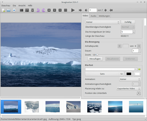

Imagination
Dieser Artikel wurde für die folgenden Ubuntu-Versionen getestet:
Ubuntu 14.04 Trusty Tahr
Zum Verständnis dieses Artikels sind folgende Seiten hilfreich:
Imagination  ist ein Programm, um aus einzelnen Fotos eine Diaschau (Slideshow) zu erstellen. Das erzeugte Video muss anschließend mit externen Programmen aufbereitet und auf DVD gebrannt werden. Ab der Version 3.0 ist auch eine Ausgabe in HD möglich. Es ist sehr einfach zu bedienen und besitzt eine deutsche Lokalisierung. Im Hintergrund kommt FFmpeg zum Einsatz.
ist ein Programm, um aus einzelnen Fotos eine Diaschau (Slideshow) zu erstellen. Das erzeugte Video muss anschließend mit externen Programmen aufbereitet und auf DVD gebrannt werden. Ab der Version 3.0 ist auch eine Ausgabe in HD möglich. Es ist sehr einfach zu bedienen und besitzt eine deutsche Lokalisierung. Im Hintergrund kommt FFmpeg zum Einsatz.
Funktionen:
Import der gängigsten Bild- (JPG, PNG) und Audioformate (MP3, OGG)
69 Überblend-Effekte
Export als
DVD Video (VOB bzw. MPEG)
Theora/Vorbis (OGV)
Flash Video (FLV) und
Mobile Phones (3GP)
Weitere Programme zum Erstellen eines Videos aus Einzelbildern sind im Artikel Diashows erstellen zu finden.
Installation¶
 Das Programm ist in den offiziellen Paketquellen enthalten. Folgende Pakete müssen installiert [1] werden:
Das Programm ist in den offiziellen Paketquellen enthalten. Folgende Pakete müssen installiert [1] werden:
libav-tools (universe)
libavcodec-extra-54 (universe)
libavformat54 (universe)
libavutil52 (universe)
libsox-fmt-all (universe)
imagination (universe)
 mit apturl
mit apturl
Paketliste zum Kopieren:
sudo apt-get install libav-tools libavcodec-extra-54 libavformat54 libavutil52 libsox-fmt-all imagination
sudo aptitude install libav-tools libavcodec-extra-54 libavformat54 libavutil52 libsox-fmt-all imagination
Abschließend einen Symlink für ffmpeg erstellen [2]:
sudo ln -s /usr/bin/avconv /usr/bin/ffmpeg
Siehe auch Problembehebung.
Bedienung¶
 Zu finden ist das Programm bei Ubuntu-Varianten mit einem Anwendungsmenü unter "Unterhaltungsmedien -> Imagination" oder "Multimedia -> Imagination" [3]. Ansonsten gibt man den Programmnamen ein.
Das Erstellen eines Videos ist sehr einfach: man legt eine neue Diaschau an, importiert die gewünschten Bilder ( Strg + I ) und exportiert das Video im gewünschten Format. Für eine "Neue Diashow" verwendet man die Tastenkombination Strg + N . Möchte man die Anzeigedauer der Einzelbilder ändern (Vorgabe: 1 Sekunde), markiert man mit Strg + A alle Bilder und ändert dann die Anzeigedauer nach Bedarf.
Zusätzlich können der Übergang zwischen zwei Bildern (Überblend-Effekt) beeinflusst und Text (auch auf leeren Bildern) eingearbeitet werden. Die Sortierung der einzelnen Bilder kann im unteren Fenster vorgenommen werden. Die Bildauswahl und die vorgenommenen Einstellungen können gespeichert werden, um nicht jedes Mal von vorne anfangen zu müssen. Das Programm speichert die Diaschau in einer Textdatei mit der Endung .img, die mit einem beliebigen Editor betrachtet werden kann.
Unterlegung mit Musik¶
Es können prinzipiell auch mehrere Audiodateien importiert werden. Jedoch führt der Import von mehreren Audiodateien bei der Erstellung einer Videodatei u.U. zu einer Endlosschleife des Hilfsprogramms FFmpeg. Daher sollte bei Problemen nur eine Audiodatei verwendet werden.
Soll eine SVCD erstellt werden, so ist darauf zu achten, dass die Audiospur mindestens die Länge der Diaschau hat. Das Video wird nach der Erstellung die Länge der Audiospur haben. Von daher bietet es sich an, zunächst z.B. mit Audacity eine Audiospur in der gewünschten Länge anzulegen und diese dann zu importieren.
Erstellen einer SVCD¶
In vielen Fällen soll eine SVideoCD erstellt werden, die auch von normalen DVD-Playern abgespielt werden kann. Leider genügt es nicht, die von Imagination erstellte VOB- bzw. MPEG-Datei auf einen optischen Datenträger zu brennen. Vielmehr muss eine lauffähige SVCD erstellt werden.
Hierfür bietet sich das Programm DeVeDe an. Damit kann die erstellte .vob-Datei importiert werden. In einem weiteren Arbeitsschritt wird eine Abbilddatei (Image) zum Brennen erzeugt.
Erstellen einer DVD¶
Das Erstellen einer DVD ist ein Kapitel für sich: DVD-Authoring. Empfehlenswert ist auch der Artikel Grundlagen der Videobearbeitung.
Problembehebung¶
Ubuntu 14.04¶
Wie viele andere Programme auch ist Imagination von der Problematik betroffen, dass das Programm ffmpeg ab Ubuntu 14.04 nicht mehr in den offiziellen Paketquellen enthalten ist und das alternative avconv erst nachinstalliert werden muss. Teilweise kann es helfen, anschließend einen Symlink zu setzen (siehe FFmpeg), um das Vorhandensein von ffmpeg zu simulieren.
HD-Videos¶
Des Weiteren kann der Rechner einfrieren, wenn HD-Videos erzeugt werden sollen (unter 14.04 aufgetreten).
Links¶
Bilder
des ProgrammsImagination, a simple and lightweight DVD slideshow
- Diskussion auf Ubuntuforums.org
Elegante Vorstellung – Diashows erstellen mit Imagination
 - Linux User, 09/2011
- Linux User, 09/2011Grafik
 Bildbearbeitung
BildbearbeitungVideobearbeitung
diese Programme bieten zusätzliche Möglichkeiten bei der Erstellung eines Videos
- Erstellt mit Inyoka
-
 2004 – 2017 ubuntuusers.de • Einige Rechte vorbehalten
2004 – 2017 ubuntuusers.de • Einige Rechte vorbehalten
Lizenz • Kontakt • Datenschutz • Impressum • Serverstatus -
Serverhousing gespendet von